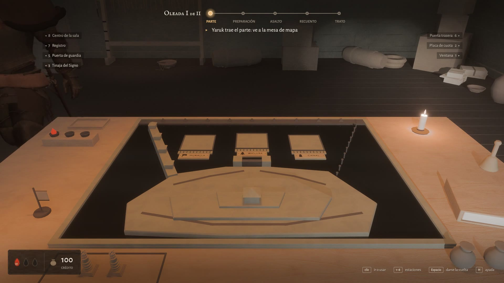
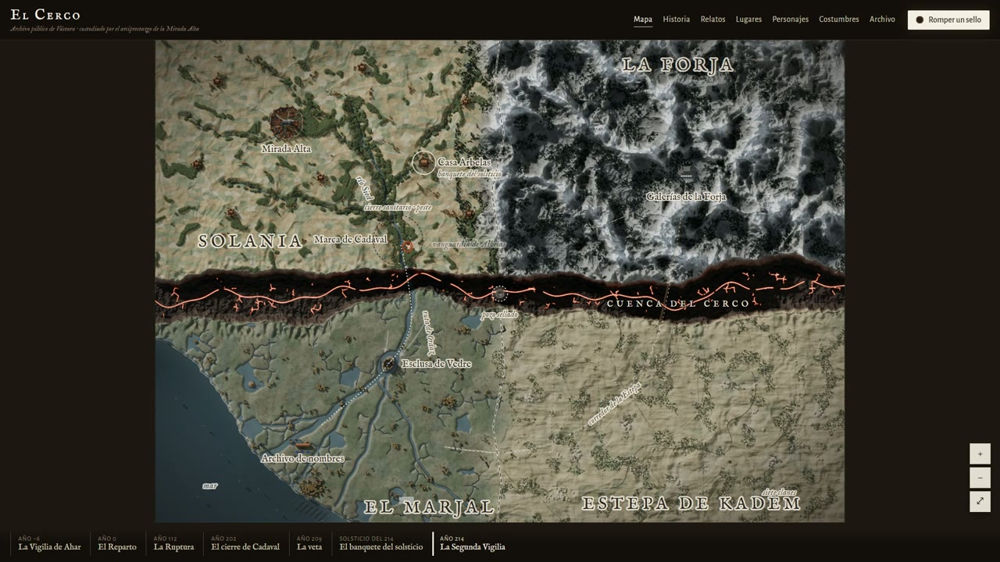

24 de noviembre de 2026 · Entrada
Plataforma Principal
La primera versión jugable de Vástara: la Esclusa: dos oleadas completas, descarga para Windows, gameplay en video, instrucciones de acceso, estado de desarrollo y créditos. Incluye la web conectada, El Cerco.
Leer la entrada →

Plataforma conectada · Sitio web
El Cerco
El archivo público de Vástara: lo que cada pueblo cuenta de sí mismo y los pliegos que lo desmienten. Los códigos que consigues en el juego rompen sus sellos.
Abrir El Cerco →